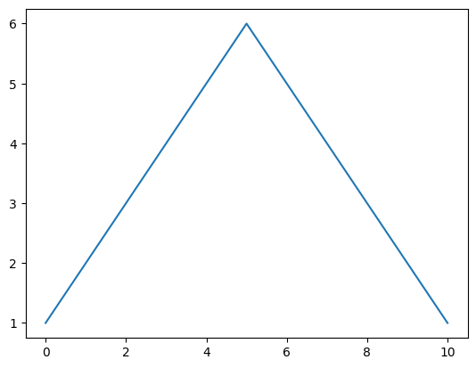
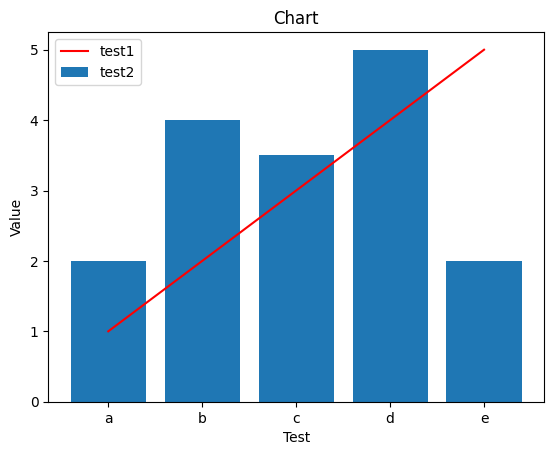

import pandas as pd타이타닉 데이터 조작해보고 간단한 시각화 코드 보기
실제 데이터 사용해보기
df = pd.read_csv('/content/drive/MyDrive/2023 빅리더/파이썬/data/pythondata/titanic.csv') # csv 파일 불러오기
df| PassengerId | Survived | Pclass | Name | Sex | Age | SibSp | Parch | Ticket | Fare | Cabin | Embarked | |
|---|---|---|---|---|---|---|---|---|---|---|---|---|
| 0 | 1 | 0 | 3 | Braund, Mr. Owen Harris | male | 22.0 | 1 | 0 | A/5 21171 | 7.2500 | NaN | S |
| 1 | 2 | 1 | 1 | Cumings, Mrs. John Bradley (Florence Briggs Th... | female | 38.0 | 1 | 0 | PC 17599 | 71.2833 | C85 | C |
| 2 | 3 | 1 | 3 | Heikkinen, Miss. Laina | female | 26.0 | 0 | 0 | STON/O2. 3101282 | 7.9250 | NaN | S |
| 3 | 4 | 1 | 1 | Futrelle, Mrs. Jacques Heath (Lily May Peel) | female | 35.0 | 1 | 0 | 113803 | 53.1000 | C123 | S |
| 4 | 5 | 0 | 3 | Allen, Mr. William Henry | male | 35.0 | 0 | 0 | 373450 | 8.0500 | NaN | S |
| ... | ... | ... | ... | ... | ... | ... | ... | ... | ... | ... | ... | ... |
| 886 | 887 | 0 | 2 | Montvila, Rev. Juozas | male | 27.0 | 0 | 0 | 211536 | 13.0000 | NaN | S |
| 887 | 888 | 1 | 1 | Graham, Miss. Margaret Edith | female | 19.0 | 0 | 0 | 112053 | 30.0000 | B42 | S |
| 888 | 889 | 0 | 3 | Johnston, Miss. Catherine Helen "Carrie" | female | NaN | 1 | 2 | W./C. 6607 | 23.4500 | NaN | S |
| 889 | 890 | 1 | 1 | Behr, Mr. Karl Howell | male | 26.0 | 0 | 0 | 111369 | 30.0000 | C148 | C |
| 890 | 891 | 0 | 3 | Dooley, Mr. Patrick | male | 32.0 | 0 | 0 | 370376 | 7.7500 | NaN | Q |
891 rows × 12 columns
df.describe()| PassengerId | Survived | Pclass | Age | SibSp | Parch | Fare | |
|---|---|---|---|---|---|---|---|
| count | 891.000000 | 891.000000 | 891.000000 | 714.000000 | 891.000000 | 891.000000 | 891.000000 |
| mean | 446.000000 | 0.383838 | 2.308642 | 29.699118 | 0.523008 | 0.381594 | 32.204208 |
| std | 257.353842 | 0.486592 | 0.836071 | 14.526497 | 1.102743 | 0.806057 | 49.693429 |
| min | 1.000000 | 0.000000 | 1.000000 | 0.420000 | 0.000000 | 0.000000 | 0.000000 |
| 25% | 223.500000 | 0.000000 | 2.000000 | 20.125000 | 0.000000 | 0.000000 | 7.910400 |
| 50% | 446.000000 | 0.000000 | 3.000000 | 28.000000 | 0.000000 | 0.000000 | 14.454200 |
| 75% | 668.500000 | 1.000000 | 3.000000 | 38.000000 | 1.000000 | 0.000000 | 31.000000 |
| max | 891.000000 | 1.000000 | 3.000000 | 80.000000 | 8.000000 | 6.000000 | 512.329200 |
df.info()<class 'pandas.core.frame.DataFrame'>
RangeIndex: 891 entries, 0 to 890
Data columns (total 12 columns):
# Column Non-Null Count Dtype
--- ------ -------------- -----
0 PassengerId 891 non-null int64
1 Survived 891 non-null int64
2 Pclass 891 non-null int64
3 Name 891 non-null object
4 Sex 891 non-null object
5 Age 714 non-null float64
6 SibSp 891 non-null int64
7 Parch 891 non-null int64
8 Ticket 891 non-null object
9 Fare 891 non-null float64
10 Cabin 204 non-null object
11 Embarked 889 non-null object
dtypes: float64(2), int64(5), object(5)
memory usage: 83.7+ KBdf.isnull()| PassengerId | Survived | Pclass | Name | Sex | Age | SibSp | Parch | Ticket | Fare | Cabin | Embarked | |
|---|---|---|---|---|---|---|---|---|---|---|---|---|
| 0 | False | False | False | False | False | False | False | False | False | False | True | False |
| 1 | False | False | False | False | False | False | False | False | False | False | False | False |
| 2 | False | False | False | False | False | False | False | False | False | False | True | False |
| 3 | False | False | False | False | False | False | False | False | False | False | False | False |
| 4 | False | False | False | False | False | False | False | False | False | False | True | False |
| ... | ... | ... | ... | ... | ... | ... | ... | ... | ... | ... | ... | ... |
| 886 | False | False | False | False | False | False | False | False | False | False | True | False |
| 887 | False | False | False | False | False | False | False | False | False | False | False | False |
| 888 | False | False | False | False | False | True | False | False | False | False | True | False |
| 889 | False | False | False | False | False | False | False | False | False | False | False | False |
| 890 | False | False | False | False | False | False | False | False | False | False | True | False |
891 rows × 12 columns
df['Age'].isnull().sum()177df.set_index('PassengerId', inplace=True)df.head()| Survived | Pclass | Name | Sex | Age | SibSp | Parch | Ticket | Fare | Cabin | Embarked | |
|---|---|---|---|---|---|---|---|---|---|---|---|
| PassengerId | |||||||||||
| 1 | 0 | 3 | Braund, Mr. Owen Harris | male | 22.0 | 1 | 0 | A/5 21171 | 7.2500 | NaN | S |
| 2 | 1 | 1 | Cumings, Mrs. John Bradley (Florence Briggs Th... | female | 38.0 | 1 | 0 | PC 17599 | 71.2833 | C85 | C |
| 3 | 1 | 3 | Heikkinen, Miss. Laina | female | 26.0 | 0 | 0 | STON/O2. 3101282 | 7.9250 | NaN | S |
| 4 | 1 | 1 | Futrelle, Mrs. Jacques Heath (Lily May Peel) | female | 35.0 | 1 | 0 | 113803 | 53.1000 | C123 | S |
| 5 | 0 | 3 | Allen, Mr. William Henry | male | 35.0 | 0 | 0 | 373450 | 8.0500 | NaN | S |
# 보고 싶은 컬럼만 추출하기
df_new = df[['Name', 'Sex', 'Age']]
df_new.head()| Name | Sex | Age | |
|---|---|---|---|
| PassengerId | |||
| 1 | Braund, Mr. Owen Harris | male | 22.0 |
| 2 | Cumings, Mrs. John Bradley (Florence Briggs Th... | female | 38.0 |
| 3 | Heikkinen, Miss. Laina | female | 26.0 |
| 4 | Futrelle, Mrs. Jacques Heath (Lily May Peel) | female | 35.0 |
| 5 | Allen, Mr. William Henry | male | 35.0 |
# 내가 원본 데이터를 안다는 가정하게 usecol 을 사용할수도 있음.
df_usecol = pd.read_csv('/content/drive/MyDrive/2023 빅리더/파이썬/data/pythondata/titanic.csv', usecols=['PassengerId', 'Name', 'Sex', 'Age'])
df_usecol.head()| PassengerId | Name | Sex | Age | |
|---|---|---|---|---|
| 0 | 1 | Braund, Mr. Owen Harris | male | 22.0 |
| 1 | 2 | Cumings, Mrs. John Bradley (Florence Briggs Th... | female | 38.0 |
| 2 | 3 | Heikkinen, Miss. Laina | female | 26.0 |
| 3 | 4 | Futrelle, Mrs. Jacques Heath (Lily May Peel) | female | 35.0 |
| 4 | 5 | Allen, Mr. William Henry | male | 35.0 |
# 생존률과 상관관계 위주로 분석
df.corr()FutureWarning: The default value of numeric_only in DataFrame.corr is deprecated. In a future version, it will default to False. Select only valid columns or specify the value of numeric_only to silence this warning.
df.corr()| Survived | Pclass | Age | SibSp | Parch | Fare | |
|---|---|---|---|---|---|---|
| Survived | 1.000000 | -0.338481 | -0.077221 | -0.035322 | 0.081629 | 0.257307 |
| Pclass | -0.338481 | 1.000000 | -0.369226 | 0.083081 | 0.018443 | -0.549500 |
| Age | -0.077221 | -0.369226 | 1.000000 | -0.308247 | -0.189119 | 0.096067 |
| SibSp | -0.035322 | 0.083081 | -0.308247 | 1.000000 | 0.414838 | 0.159651 |
| Parch | 0.081629 | 0.018443 | -0.189119 | 0.414838 | 1.000000 | 0.216225 |
| Fare | 0.257307 | -0.549500 | 0.096067 | 0.159651 | 0.216225 | 1.000000 |
결측치 처리
결측치 처리에 관해선 정답이 없다는게 내 주관적인 생각.
맞다고 생각되면 일단 해보는걸 추천함.
# Age : 177 / Cabin : 687 / Embarked : 2
df.isnull().sum()Survived 0
Pclass 0
Name 0
Sex 0
Age 177
SibSp 0
Parch 0
Ticket 0
Fare 0
Cabin 687
Embarked 2
dtype: int64결측치를 무작정 제거하는건 좋은 생각이 아님
#df.dropna(subset=['Age', 'Cabin'])탑승객들의 나이는 어떤식으로 결측치 처리 할 것인가
# 그냥 평균으로 넣을 수도 있음.
# df['Age'].fillna(df['Age'].mean())# 생존자 나이 평균
mean1 = df[df['Survived'] == 1]['Age'].mean()
# 사망자 나이 평균
mean0 = df[df['Survived'] == 0]['Age'].mean()
print(mean1, mean0)28.343689655172415 30.62617924528302df.loc[df['Survived'] == 1, 'Age']PassengerId
2 38.0
3 26.0
4 35.0
9 27.0
10 14.0
...
876 15.0
880 56.0
881 25.0
888 19.0
890 26.0
Name: Age, Length: 342, dtype: float64df[df['Survived'] == 1]['Age'] # 생존그룹에서 나이만 추출PassengerId
2 38.0
3 26.0
4 35.0
9 27.0
10 14.0
...
876 15.0
880 56.0
881 25.0
888 19.0
890 26.0
Name: Age, Length: 342, dtype: float64# 앞에는 생존자 그룹을 분류 / 뒤에는
df.loc[df['Survived'] == 1, 'Age'] = df[df['Survived'] == 1]['Age'].fillna(mean1)
df.loc[df['Survived'] == 0, 'Age'] = df[df['Survived'] == 0]['Age'].fillna(mean0)Python 시각화
%matplotlib inline
s = [1,2,3,4,5,6,5,4,3,2,1]
s1 = pd.Series(s)
s1.plot()<Axes: >
import matplotlib.pyplot as plt
%matplotlib inline
s = [1,2,3,4,5,6,5,4,3,2,1]
plt.plot(s)
plt.show()chat gpt한태 물어보면 엄청 잘 알려줌
데이터의 종류에 따라서 적절한 시각화 방법이 다른데 이걸 경험적으로 아는게 중요함
import matplotlib.pyplot as pltp1 = ['a', 'b', 'c', 'd', 'e']
s1 = [1, 2, 3, 4, 5]
s2 = [2, 4, 3.5, 5, 2]
plt.xlabel('Test')
plt.ylabel('Value')
plt.title('Chart')
plt.plot(p1, s1, 'r')
plt.bar(p1, s2) # 여기까지 실행하면 그래프가 안그려짐. 하지만 주피터 노트북 환경에선 그려지는데 인터프리터의 특성이 반영된 것임.
plt.legend(['test1', 'test2']) # 범례
plt.show()
###데이터 크롤링 방법
from bs4 import BeautifulSoup
from urllib.request import urlopen